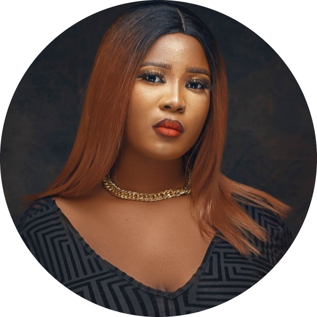

Onwughalu Amara
Biography

My name is Onwughalu Amara, born on April 6th 2001 in Ekwulobia, Anambra state, Nigeria. I hail from Idemili-North Local Government Area Obosi, Anambra state, Nigeria.
Early Life
I was born to the family of Mr and Mrs Onwughalu. I was born into a Christian family and raised with two elder brothers. Being the only girl, it was a very wonderful expirence growing up with two big brothers.
Education
I attended All Saint's primary school from 2006-2012. Moving forward, I attended Divine Royal Internation
School from 2012-2018.
Futhering my education, I attended Ambrose Ali University in Edo state from 2018 till date, studying Medical
Laboratory Science.
I am also an active student of Altschool Africa in the school of engineering. My student ID is ALT/SOE/023/2064. The reason why I applied for Altschool Africa is to gain diverse knowledge about cloud enginnering and to become a certified cloud engineer for my self development and make impact in the world at large.
Skills
Baking:
I am the owner of Amiz bakes. We bake cakes, desserts and snacks.Sewing:
I can make simple wears.Cooking:
I can make a lot of African dishes and few intercontinetal dishes.Hobbies
My hobbies include:
- Listening to music
- Watching movies
- Baking
- Sleeping